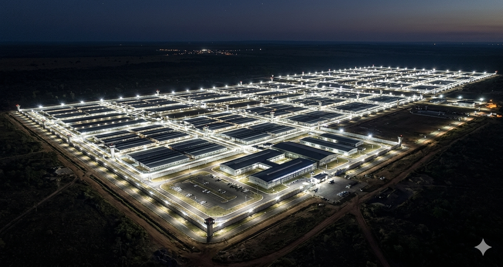
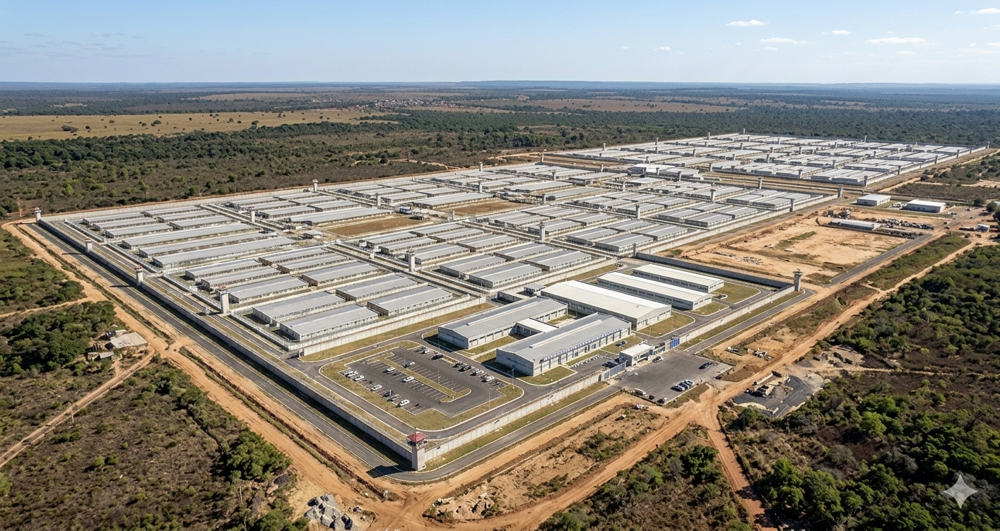

O CECOTINS é a proposta do Partido Missão para criação de uma prisão de segurança máxima no Tocantins, inspirada no CECOT de El Salvador, a maior e mais eficaz prisão anti-crime organizado do mundo. Um projeto sem precedentes no Brasil, com capacidade para 100.000 detentos.


Este é um site propositivo, não governamental. O CECOTINS ainda não existe: é uma proposta formal do Partido Missão, liderado por Renan Santos (fundador do MBL), para ser implantado caso cheguemos ao poder na eleição presidencial de 2026. Todo o conteúdo aqui apresentado é parte da plataforma eleitoral pública do partido.
Em janeiro de 2023, o governo de Nayib Bukele inaugurou o Centro de Confinamento do Terrorismo (CECOT) em Tecoluca, El Salvador. Com capacidade para 40.000 presos, é a maior prisão da América Latina e um dos maiores complexos de segurança máxima do mundo.
O resultado foi imediato: El Salvador passou de um dos países mais violentos do planeta para um dos mais seguros da região. A taxa de homicídios despencou de 103 por 100 mil habitantes em 2015 para menos de 2 por 100 mil em 2024. O modelo funciona.
O CECOTINS propõe adaptar este modelo à realidade brasileira, com foco no Tocantins, estado de localização estratégica, geografia árida e logisticamente ideal para o isolamento do crime organizado. É uma proposta inscrita no Livro Amarelo do Partido Missão como pilar da plataforma de segurança pública para 2026.
A proposta parte do conceito de "Direito Penal do Inimigo": membros comprovados de organizações criminosas que declaram guerra ao Estado devem ser tratados como inimigos da sociedade, e não como cidadãos com prerrogativas comuns. A pena é isolamento total, não ressocialização.
O CECOT de El Salvador abriu suas portas em 31 de janeiro de 2023, após construção em tempo recorde de menos de 1 ano.
A taxa de homicídios em El Salvador caiu de 103/100k habitantes (2015) para menos de 2/100k em 2024 após o endurecimento penal.
O CECOT custou 100 milhões de dólares, construído em parceria entre três empresas. Projeção CECOTINS: R$ 800M a R$ 1,2Bi.
Toda a estrutura perimetral do CECOTINS será revestida com malha eletromagnética de cobre e chumbo. Nenhum sinal de 3G, 4G, 5G, Wi-Fi, Bluetooth ou rádio UHF/VHF penetra ou escapa. O fluxo de informações do crime organizado é cortado no nível físico, eliminando o comando remoto de facções a partir do interior.
O complexo opera fora da rede civil com usina própria e bancos de baterias de 8,5 milhões de mAh por módulo. Apagões externos não afetam portas magnéticas, câmeras ou bloqueadores.
Design baseado em blocos herméticos independentes. Cada galpão é uma unidade operacional isolada, e amotinamentos coordenados tornam-se logisticamente impossíveis.
Escotilhas mecânicas entregam a dieta calórica mínima diretamente nas celas. A ausência de refeitórios elimina aglomerações e reuniões de lideranças criminosas.
Câmeras térmicas e patrulhamento exclusivo pelas passarelas aéreas acima das celas. Agentes nunca dividem o nível de solo com detentos, risco de reféns eliminado.
O interior do Tocantins oferece isolamento geográfico natural, clima árido e distância logística de centros urbanos: barreiras naturais que complementam as físicas.
Dados de taxa de homicídios (por 100k habitantes) comparam países que adotaram e que ainda não adotaram o modelo de confinamento máximo.
A trajetória do modelo de confinamento máximo, do El Salvador ao Brasil.
Após massacres do MS-13 e Barrio 18, Bukele suspende garantias constitucionais e inicia operação de prisões em massa. Mais de 55.000 suspeitos de facções são presos nos primeiros 7 meses.
A prisão de 40.000 vagas abre as portas em Tecoluca. Construída em menos de 1 ano por US$ 100 milhões. Bloqueadores eletromagnéticos, passarelas aéreas, alimentação automatizada.
Taxa de homicídios cai para menos de 2 por 100k. Bukele é reeleito com mais de 82% dos votos. O modelo CECOT passa a ser estudado e debatido em toda a América Latina.
O TSE aprova por unanimidade o registro do Partido Missão, fundado por Renan Santos (cofundador do MBL). A plataforma inclui o CECOTINS como proposta central de segurança pública.
Renan Santos disputa a Presidência. Se eleito, o CECOTINS entra na agenda do primeiro ano de governo, com projeto de lei próprio e destinação de verba federal para construção no Tocantins.
" O Estado não barganha, não recua e não concede indulgências ao crime organizado. O CECOTINS é a materialização dessa convicção. uma resposta estrutural, permanente e irrevogável ao terrorismo das facções. "
Plataforma de Segurança · Partido Missão / Renan Santos, 2026
Baseado nos resultados do CECOT salvadorenho e nos dados do IBGE/FBSP sobre criminalidade brasileira.
Projeção conservadora baseada na experiência salvadorenha. Em El Salvador, a queda foi de 98% em 9 anos; o modelo CECOTINS projeta 60% nos primeiros 5 anos de operação plena.
100.000 vagas na fase inicial, com expansão modular prevista. Voltadas exclusivamente para líderes e membros comprovados de organizações criminosas: PCC, CV e afiliadas.
Projeção baseada no custo do CECOT ajustado para escala 2,5x maior. Com fontes federais e convênios com estados do Norte, o projeto é considerado financeiramente viável.
O CECOT de El Salvador levou menos de 12 meses. A proposta CECOTINS projeta 18 meses considerando a escala maior e os processos licitatórios brasileiros.
Brasil Paralelo produziu o documentário que mostra de dentro como El Salvador transformou o país mais violento do mundo no mais seguro da América Latina, em menos de 3 anos. O modelo que inspira o CECOTINS, na íntegra.
Brasil Paralelo · Produção Original
Documentário completo disponível gratuitamente no YouTube.
Apoie a candidatura de Renan Santos à Presidência da República pelo Partido Missão. Esta é a proposta. Falta só a oportunidade.
Acessar prendeumatou.com.br →